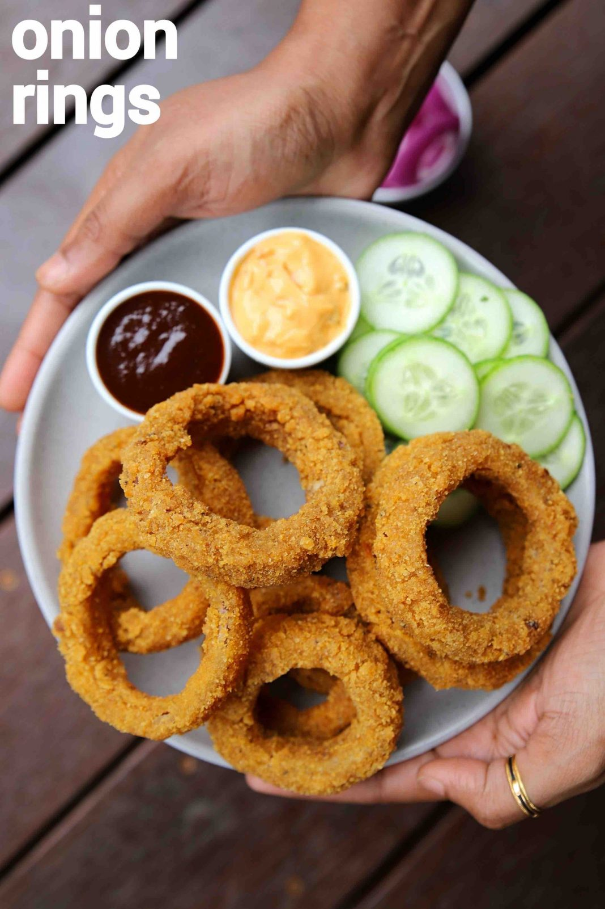

Crispy Onion Rings

Ingridients
- 1 onion
- ½ cup maida / plain flour
- 2 tbsp corn flour
- ½ tsp mixed herbs
- ½ tsp chilli flakes
- ½ tsp salt
- ½ cup water
- 1 cup corn flakes crumb
- oil for frying
Steps to make Onion rings
- in a small bowl take ½ cup maida, 2 tbsp corn flour, ½ tsp mixed herbs, ½ tsp chilli flakes and ½ tsp salt.
- prepare a smooth lump free batter adding more water if required.
- now dip an onion ring into maida paste and coat well.
- slowly drop the coated onion ring into corn flakes crumb and coat well.
- now for double coating, drop the onion ring again to maida batter and wet completely.
- further, roll in corn flakes crumbs and coat well.
- fry until the onion rings turn golden brown and crisp.
- finally, enjoy onion rings with sauce as an evening snack
Home